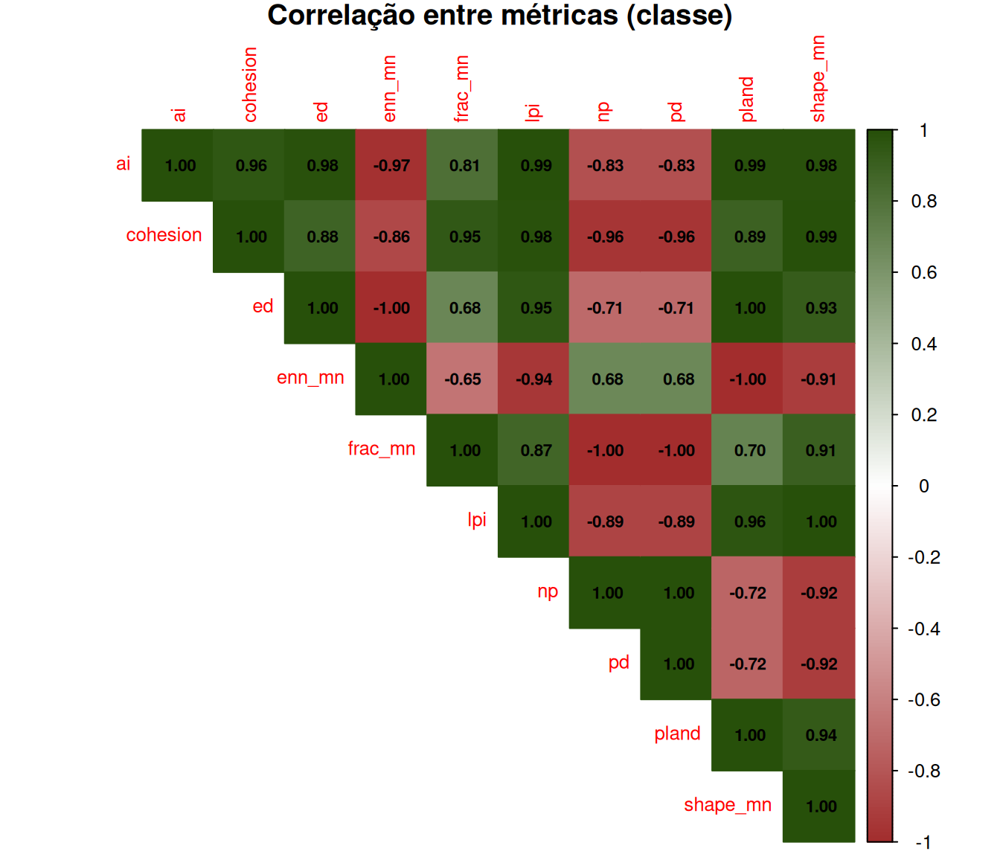

Composição (o que há) vs. Configuração (como está arranjado)
Autor
Prof. Felipe Melo
Data de Publicação
22 de maio de 2026
Apresentação da aula
Use as setas ← → para navegar pelos slides. Pressione F para tela cheia e ? para ver todos os atalhos.
1 Introdução
Nas semanas anteriores usamos métricas de paisagem como ferramentas — para medir fragmentação, calcular distâncias entre patches, avaliar conectividade estrutural e quantificar fluxos. Nesta semana fazemos um passo atrás e examinamos a lógica interna dessas ferramentas: como elas se organizam, o que cada tipo efetivamente mede e, criticamente, o que cada tipo não mede.
A distinção central é a proposta por McGarigal & Marks (1995) no software FRAGSTATS, que dividiu as métricas de paisagem em duas grandes categorias:
Composição: o que está presente e em que quantidade, sem referência à posição espacial
Configuração: como os elementos estão dispostos, o que exige coordenadas e relações espaciais para o cálculo
Compreender essa divisão não é detalhe técnico — ela define o que você pode e não pode concluir a partir de um conjunto de métricas, e determina quais análises são suficientes para responder a diferentes perguntas ecológicas.
NotaDefinição (McGarigal & Marks 1995)
As métricas de paisagem se enquadram em duas categorias gerais: as que quantificam a composição do mapa sem referência a atributos espaciais, e as que quantificam a configuração espacial do mapa, exigindo informação espacial para o seu cálculo.
2 O paradoxo fundamental
Considere o seguinte cenário: duas paisagens têm exatamente a mesma quantidade de floresta (50%), exatamente a mesma quantidade de agricultura (50%) e exatamente o mesmo número de tipos de cobertura (2). Do ponto de vista da composição, elas são idênticas. Mas uma delas tem a floresta distribuída em dezenas de fragmentos minúsculos intercalados com a agricultura (padrão “xadrez”), e a outra tem dois grandes blocos contíguos, um de cada uso.
Do ponto de vista ecológico, essas duas paisagens são radicalmente diferentes: a primeira tem área de núcleo quase zero, borda máxima, isolamento elevado e conectividade estrutural mínima. A segunda tem grande área de núcleo, pouca borda, patches grandes com baixa extinção estocástica e alta conectividade estrutural.
Figura 1 — Duas paisagens com composição idêntica (50% de cada classe) mas configuração radicalmente diferente.
Este é o paradoxo que motiva a distinção entre composição e configuração: métricas de composição sozinhas são insuficientes para caracterizar a estrutura ecológica de uma paisagem. Qualquer análise que pretenda relacionar padrão espacial a processo ecológico precisa incluir métricas de ambas as categorias.
3 Métricas de composição
3.1 O que é composição
Composição é facilmente quantificada e se refere a características associadas à variedade e abundância dos tipos de patch dentro da paisagem, mas sem considerar o caráter espacial, a posição ou a localização dos patches dentro do mosaico. Como a composição requer integração sobre todos os tipos de patch, as métricas de composição são aplicáveis apenas no nível de paisagem.
A chave desta definição é a expressão “sem considerar o caráter espacial”. Uma métrica de composição pode ser calculada a partir de uma simples tabela de área por classe — não há necessidade de conhecer onde cada pixel está, quais patches são vizinhos ou qual a forma de cada mancha. Basta saber quanto de cada tipo existe.
3.2 As métricas principais
Há muitas medidas quantitativas de composição de paisagem, incluindo a proporção da paisagem em cada tipo de patch, a riqueza de tipos de patch, a equitatividade e a diversidade de patches.
Figura 2 — As quatro principais métricas de composição: PLAND, PR, SHDI e LPI.
PLAND — Proporção de cada classe
A métrica mais básica: que percentual da área total da paisagem é ocupado por cada tipo de cobertura? Formalmente, para a classe \(i\):
Onde \(a_{ij}\) é a área do \(j\)-ésimo patch da classe \(i\) e \(A\) é a área total da paisagem. O PLAND varia entre 0 (exclusão) e 100 (paisagem dominada por uma única classe). É o primeiro número que qualquer análise de paisagem deve reportar.
PR — Riqueza de tipos de patch
O número de tipos distintos de cobertura presentes: \(PR = m\). Uma paisagem com floresta, pastagem, agricultura e água tem \(PR = 4\). É a métrica mais simples de heterogeneidade — análoga à riqueza de espécies em ecologia de comunidades.
SHDI — Índice de Diversidade de Shannon
A métrica mais usada para resumir a composição em um único número que integra riqueza e equitatividade:
\[SHDI = -\sum_{i=1}^{m} p_i \cdot \ln(p_i)\]
Onde \(p_i\) é a proporção da classe \(i\). SHDI = 0 quando há apenas uma classe; SHDI é máximo (= \(\ln m\)) quando todas as classes têm a mesma proporção. Valores intermediários refletem dominância de algumas classes.
LPI — Índice do Maior Patch
Percentual da área total ocupado pelo maior patch contíguo de qualquer classe:
\[LPI = \frac{a_{max}}{A} \times 100\]
LPI é uma medida de dominância: quanto maior o LPI, mais a paisagem é dominada por um único bloco contíguo. Em paisagens pouco fragmentadas, LPI se aproxima de PLAND da classe dominante. Em paisagens muito fragmentadas, LPI é muito menor que PLAND — sinal de que a área está distribuída em muitos patches pequenos.
AvisoO que composição não responde
Métricas de composição não informam: onde cada classe está, se os patches são contíguos ou isolados, qual a forma dos patches, qual a quantidade de borda entre classes, ou qual o grau de isolamento entre patches de habitat. Para essas questões, são necessárias métricas de configuração.
4 Métricas de configuração
4.1 O que é configuração
Configuração de paisagem se refere à distribuição física e às características espaciais dos patches presentes dentro da paisagem. Ao contrário das métricas de composição, as métricas de configuração requerem informação espacial para o cálculo — elas precisam saber onde cada pixel está, quais células são adjacentes e qual a forma geométrica de cada patch.
Estas métricas se enquadram em duas categorias gerais: as que quantificam a composição do mapa sem referência a atributos espaciais, e as que quantificam a configuração espacial do mapa, exigindo informação espacial para o seu cálculo.
4.2 As métricas principais
Figura 3 — As quatro principais métricas de configuração: NP, ED, AI e ENN.
NP/PD — Número e Densidade de Patches
O número total de patches (\(NP\)) de uma classe é a métrica mais direta de fragmentação. A densidade de patches (\(PD = NP/A \times 10.000\)) padroniza por área e permite comparações entre paisagens de tamanhos diferentes. Uma classe com \(PLAND\) alto mas \(NP\) alto indica fragmentação: muita área, mas distribuída em muitos pedaços pequenos.
ED — Densidade de Borda
A quantidade total de borda entre classes, expressa por unidade de área (\(ED = E/A\), em m/ha). Borda representa a interface entre habitats distintos — zona de alta troca de energia e matéria, como vimos na semana 8. Paisagens muito fragmentadas têm ED alto; paisagens com grandes blocos contíguos têm ED baixo. ED é calculado contando o comprimento de todas as bordas entre células de classes diferentes, operação que requer a posição espacial de cada célula.
AI — Índice de Agregação
Mede o grau em que células da mesma classe são espacialmente adjacentes umas às outras:
Onde \(g_{ii}\) é o número de adjacências entre células da mesma classe \(i\), e \(g_{ii,max}\) é o máximo possível dadas as restrições de área. \(AI = 0\) quando os pixels estão maximamente dispersos; \(AI = 100\) quando formam um único bloco compacto. O AI é uma das métricas mais informativas para distinguir paisagens com mesma composição mas configuração diferente.
ENN — Distância Euclidiana ao Vizinho Mais Próximo
A menor distância borda-a-borda entre um patch e o patch mais próximo da mesma classe. É a métrica padrão de isolamento espacial — o oposto da conectividade estrutural. Patches com ENN alto estão isolados; patches com ENN baixo têm vizinhos próximos que permitem dispersão, efeito resgate e dinâmica metapopulacional.
5 Os três níveis hierárquicos
Além da divisão composição/configuração, as métricas se organizam em três níveis hierárquicos de integração espacial:
Figura 4 — Os três níveis hierárquicos: patch, class e landscape.
Nível Patch: uma métrica é calculada para cada patch individualmente. Resulta em uma distribuição de valores — um por patch. Exemplos: área de cada patch (AREA), perímetro (PERIM), forma (SHAPE), distância ao vizinho mais próximo (ENN). Permite análises estatísticas da distribuição (média, desvio-padrão, coeficiente de variação).
Nível Class: métricas de classe são integradas sobre todos os patches de um dado tipo. Podem ser integradas por simples média, ou por algum esquema de média ponderada para refletir melhor a contribuição de patches maiores ao índice geral. Resulta em um valor por tipo de cobertura. Exemplos: área total da classe (CA), número de patches (NP), proporção na paisagem (PLAND), densidade de borda da classe (ED), isolamento médio (ENN_MN).
Nível Landscape: integra sobre todos os patches de todos os tipos. Resulta em um único valor para a paisagem inteira. Alguns índices são significativos apenas em um nível — por exemplo, índices de heterogeneidade como o índice de diversidade de Shannon (SHDI), o índice de equitatividade de Shannon (SHEI) e o índice de diversidade de Simpson (SIDI) só podem ser determinados no nível de paisagem, pois são integrados sobre todos os patches e classes da área de estudo.
DicaQual nível usar?
A escolha do nível depende da pergunta. Para entender a ecologia de uma espécie específica, métricas de class (do habitat dela) são mais informativas. Para comparar paisagens inteiras em estudos de gradiente de fragmentação ou uso do solo, métricas de landscape são mais adequadas. Para modelar a probabilidade de extinção de populações individuais em patches específicos, métricas de patch são necessárias.
6 Redundância e conjunto mínimo
6.1 O problema da redundância
Com mais de 130 métricas disponíveis no landscapemetrics, uma armadilha frequente é calcular um grande número delas e tratá-las como se fossem informações independentes. Landscape metrics allow to quantify the composition (i.e., amount) of and configuration (i.e., arrangement) of spatial landscape characteristics within the context of categorical raster data. Porém, muitas métricas são fortemente correlacionadas entre si — especialmente dentro de grupos funcionais (área/borda, forma, agregação, isolamento).
Figura 5 — Grupos de métricas correlacionadas e o problema da redundância.
Usar 20 métricas fortemente correlacionadas em uma análise multivariada não acrescenta informação — apenas infla artificialmente os graus de liberdade e dificulta a interpretação ecológica dos resultados.
6.2 O conjunto mínimo recomendado
Cushman et al. (2008) propuseram um conjunto parcimonioso de métricas que maximiza a informação ecológica capturada com o mínimo de redundância. O princípio é selecionar métricas ortogonais — pouco correlacionadas entre si — que cubram os principais aspectos de composição e configuração.
Figura 6 — Conjunto mínimo recomendado de métricas por objetivo analítico.
Para a maioria das análises de fragmentação e conectividade estrutural, o conjunto a seguir cobre as dimensões essenciais da estrutura da paisagem com redundância mínima:
Dimensão
Métricas recomendadas
Composição (abundância)
PLAND por classe
Composição (diversidade)
SHDI (landscape)
Fragmentação
NP ou PD por classe
Borda / interface
ED por classe ou landscape
Agregação espacial
AI por classe
Isolamento
ENN_MN por classe
Forma
SHAPE_MN ou FRAC_MN por classe
7 Calculando métricas no R
7.1 Composição com landscapemetrics
Código
library(terra)library(landscapemetrics)library(dplyr)library(ggplot2)library(tidyr)# Carregar paisagem de exemplopaisagem <- terra::rast(landscapemetrics::landscape)# ── COMPOSIÇÃO ─────────────────────────────────────────────────────────────────# Proporção de cada classe (PLAND)pland <-lsm_c_pland(paisagem)# Riqueza de tipos (PR) — nível landscapepr <-lsm_l_pr(paisagem)# Diversidade de Shannon (SHDI) — nível landscapeshdi <-lsm_l_shdi(paisagem)# Equitatividade de Shannon (SHEI)shei <-lsm_l_shei(paisagem)# Índice do maior patch (LPI) — nível landscapelpi <-lsm_l_lpi(paisagem)# Reunir composição em tabela legívelcomposicao <-bind_rows( pland |>mutate(nivel ="class"), pr |>mutate(nivel ="landscape"), shdi |>mutate(nivel ="landscape"), shei |>mutate(nivel ="landscape"), lpi |>mutate(nivel ="landscape")) |>select(level, class, metric, value) |>arrange(level, metric)print(composicao)
# A tibble: 7 × 4
level class metric value
<chr> <int> <chr> <dbl>
1 class 1 pland 20.4
2 class 2 pland 26
3 class 3 pland 53.6
4 landscape NA lpi 17.7
5 landscape NA pr 3
6 landscape NA shdi 1.01
7 landscape NA shei 0.919
7.2 Configuração com landscapemetrics
Código
# ── CONFIGURAÇÃO ───────────────────────────────────────────────────────────────# Número de patches por classe (NP)np <-lsm_c_np(paisagem)# Densidade de borda por classe (ED)ed <-lsm_c_ed(paisagem)# Índice de agregação por classe (AI)ai <-lsm_c_ai(paisagem)# Distância média ao vizinho mais próximo (ENN_MN)enn <-lsm_c_enn_mn(paisagem)# Forma média (SHAPE_MN)shp <-lsm_c_shape_mn(paisagem)# Reunir configuraçãoconfiguracao <-bind_rows(np, ed, ai, enn, shp) |>select(level, class, metric, value) |>mutate(classe =case_when( class ==1~"Floresta", class ==2~"Agricultura", class ==3~"Outros" ) )print(configuracao)
# A tibble: 15 × 5
level class metric value classe
<chr> <int> <chr> <dbl> <chr>
1 class 1 np 9 Floresta
2 class 2 np 13 Agricultura
3 class 3 np 6 Outros
4 class 1 ed 2011. Floresta
5 class 2 ed 2256. Agricultura
6 class 3 ed 3289. Outros
7 class 1 ai 79.7 Floresta
8 class 2 ai 79.6 Agricultura
9 class 3 ai 84.9 Outros
10 class 1 enn_mn 4.09 Floresta
11 class 2 enn_mn 3.61 Agricultura
12 class 3 enn_mn 2 Outros
13 class 1 shape_mn 1.33 Floresta
14 class 2 shape_mn 1.22 Agricultura
15 class 3 shape_mn 1.75 Outros
7.3 Visualizando o paradoxo composição ≠ configuração
O mesmo PLAND com NP e AI diferentes: composição idêntica, configuração distinta
7.4 Matriz de correlação entre métricas
Código
# Calcular conjunto amplo de métricas na paisagem exemplotodas <-calculate_lsm( paisagem,what =c("lsm_c_pland", "lsm_c_np", "lsm_c_ed","lsm_c_ai", "lsm_c_enn_mn", "lsm_c_shape_mn","lsm_c_lpi", "lsm_c_pd", "lsm_c_frac_mn","lsm_c_cohesion" )) |>filter(level =="class") |>select(class, metric, value) |>pivot_wider(names_from = metric, values_from = value, values_fn = mean) |>select(-class)# Correlaçãoif (ncol(todas) >=4) { cor_mat <-cor(todas, use ="pairwise.complete.obs")# Visualizar com corrplot (se disponível) ou heatmap simplesif (requireNamespace("corrplot", quietly =TRUE)) { corrplot::corrplot(cor_mat, method ="color",tl.cex =0.8, number.cex =0.7,addCoef.col ="black", type ="upper",col =colorRampPalette(c("#A32D2D","white","#27500A"))(200),title ="Correlação entre métricas (classe)",mar =c(0,0,1,0)) } else {# Alternativa: heatmap com ggplot2 cor_df <-as.data.frame(cor_mat) |> tibble::rownames_to_column("m1") |>pivot_longer(-m1, names_to ="m2", values_to ="r")ggplot(cor_df, aes(x = m1, y = m2, fill = r)) +geom_tile(color ="white") +scale_fill_gradient2(low ="#A32D2D", mid ="white", high ="#27500A",midpoint =0, limits =c(-1, 1),name ="r de\nPearson" ) +geom_text(aes(label =round(r, 2)), size =2.8) +labs(title ="Matriz de correlação entre métricas de paisagem",x =NULL, y =NULL) +theme_minimal(base_size =11) +theme(axis.text.x =element_text(angle =45, hjust =1)) }}

Correlação entre métricas de paisagem — base para seleção do conjunto mínimo
8 Síntese
A divisão composição / configuração é o arcabouço organizador de todas as métricas de paisagem. Quatro lições centrais emergem:
1. Composição e configuração são dimensões independentes. Duas paisagens com composição idêntica podem ter configurações opostas — e consequências ecológicas completamente diferentes para fragmentação, conectividade, qualidade de habitat e biodiversidade.
2. Métricas de composição são necessárias mas não suficientes. Qualquer análise de estrutura de paisagem deve incluir pelo menos uma métrica de composição (PLAND, SHDI) e pelo menos uma de configuração (NP/PD, ED, AI ou ENN). Usar apenas composição é equivalente a descrever uma comunidade só pela riqueza de espécies, ignorando a abundância relativa e a estrutura espacial.
3. Os três níveis hierárquicos definem a escala da inferência. Métricas de patch informam sobre fragmentos individuais; métricas de class informam sobre um tipo de cobertura; métricas de landscape informam sobre a paisagem inteira. A escolha do nível deve corresponder à escala do processo ecológico que se quer entender.
4. Parcimônia é virtude. Com 130+ métricas disponíveis, a seleção criteriosa de um conjunto mínimo não correlacionado (Cushman et al. 2008) produz análises mais interpretáveis, estatisticamente mais robustas e ecologicamente mais coerentes do que o uso indiscriminado de muitas métricas redundantes.
9 Leituras recomendadas
Referência
Por que ler
McGarigal & Marks (1995) FRAGSTATS — USDA Forest Service
Manual original que define a divisão composição/configuração e descreve todas as métricas
Gustafson (1998) Ecosystems 1:143–156
Revisão crítica dos conceitos de heterogeneidade espacial e como as métricas a capturam
Cushman et al. (2008) Ecol. Indic. 8:691–703
Parcimônia em métricas: análise de correlação e proposta de conjunto mínimo
Hesselbarth et al. (2019) Ecography 42:1648–1657
Artigo do pacote landscapemetrics — implementação moderna em R
Uuemaa et al. (2013) PLOS ONE 8:e59053
Revisão de tendências no uso de métricas de paisagem: o que se usa e o que se deveria usar
10 Atividade prática
ImportanteAtividade da Semana 9 — entrega via Google Sala de Aula
Usando o raster de uso do solo da disciplina (ou um de sua escolha):
Calcule o conjunto mínimo recomendado de métricas: PLAND, SHDI, NP, ED, AI e ENN_MN para todas as classes presentes.
Construa uma tabela comparando as métricas de composição com as de configuração e discuta, para cada classe, o que elas revelam sobre a estrutura da paisagem que a outra categoria não revela.
Simule duas paisagens com a mesma composição (mesmos valores de PLAND) mas configuração diferente. Use o código da aula como base e compare os valores de NP, ED e AI entre elas. Explique ecologicamente o que diferencia as duas.
Calcule a matriz de correlação entre pelo menos 8 métricas e identifique quais pares são mais redundantes (|r| > 0,8). Proponha um conjunto reduzido de 5 métricas que minimize a redundância.
Entregue relatório .qmd renderizado como HTML com código e interpretação integrados.
Semana 9 — Ecologia de Paisagens BO-304, UFPE, 2026.1. Material em desenvolvimento contínuo.